4 minutes
Authenticated MongoDB Container
Unsecured mongodb servers have been prime targets for hacks aimed at exaction of ransom in exchange of data. Therefore, authenticated mongo database server is now more of a necessity to ensure security of your database.
There are two ways to setup an authenticated mongo server container.
Manually
Setup the container
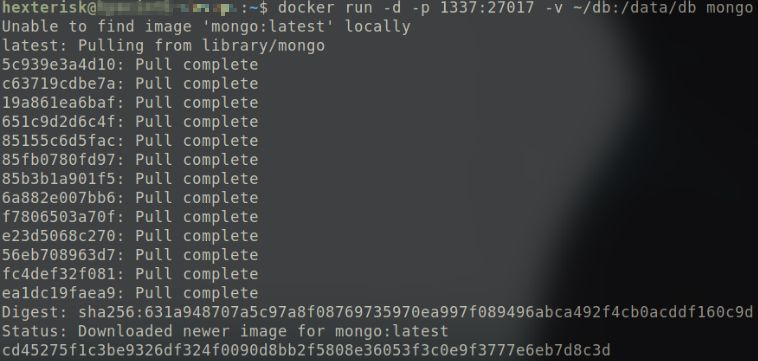 Pulling the mongo docker image from dockerhub as it doesn’t exist on server/local machine.
Create a directory for the database to be stored in on the server/local machine.
mkdir ~/db
Run the mongo container and attach it to a non-conventional port so as to make it comparatively tougher for automated scanners and initial discovery techniques to exploit.
sudo docker run -d -p CUSTOM_PORT:27017 -v ~/db:/data/db mongo
- Maps the container’s 27017 port (where the mongo server is running) to the server/local machine’s CUSTOM_PORT.
- Maps the /data/db directory inside the container to server/local machine’s ~/db directory.
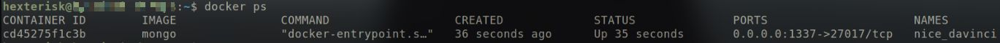 The container we just initialised.
Creating admin user
Spawn a mongo shell through a shell inside the container and create the user manually.
docker exec -it CONTAINER_NAME/CONTAINER_ID bash
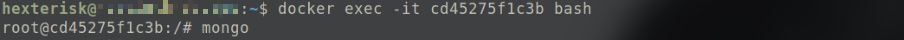 Spawning mongo shell.
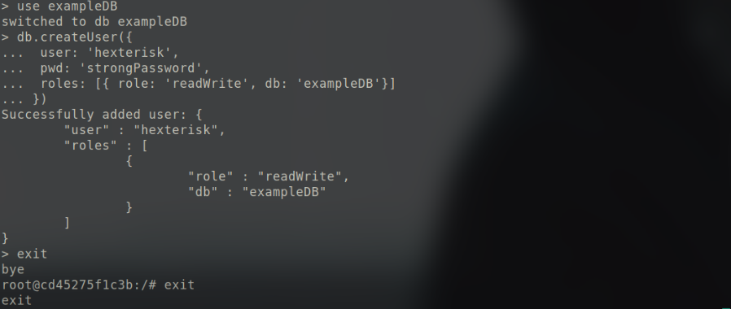 Creating user through mongo shell.
Restart the container with auth flag this time.
docker stop CONTAINER_NAME/CONTAINER_ID
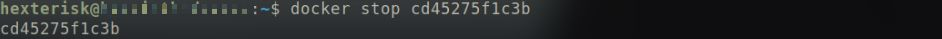 Stopping the container using container ID.
This error implies that the port specified is already locked by another process (the initial container in this case).
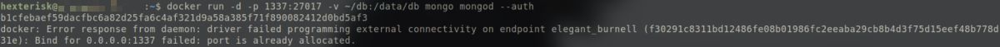 Port pre-occupied by the initial container.
docker run -d -p CUSTOM_PORT:27017 -v ~/db:/data/db mongo mongod --auth
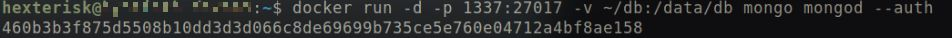 Restarting the container with the auth flag.
⇨ New users can be created in the same way.
Script
The file structure is as follows:
db/
├── docker-compose.yml
├── mongo-entrypoint/
│ └── init.sh
├── secrets/
│ └── mongo_admin_user
│ └── mongo_admin_password
└── data-volume/
An example docker-compose.yml file is shown. It can be tailored according to requirement.
version: "3.6"
services:
mongo:
image: mongo
container_name: mongo_database
ports:
- "1337:27017"
volumes:
- ./db/data-volume:/data/db
- "$PWD/mongo-entrypoint/:/docker-entrypoint-initdb.d/"
command: mongod
environment:
- MONGO_INITDB_ROOT_USERNAME_FILE=/run/secrets/mongo_admin_user
- MONGO_INITDB_ROOT_PASSWORD_FILE=/run/secrets/mongo_admin_password
secrets:
- mongo_admin_password
- mongo_admin_user
volumes:
data-volume:
secrets:
mongo_admin_user:
file: ./secrets/mongo_admin_user
mongo_admin_password:
file: ./secrets/mongo_admin_password
- Volumes:
- A data-volume directory is created on the server/local machine which maps /data/db directory inside the container.
- A directory in the current folder named mongo-entrypoint can be used to put the scripts in that you want to execute as soon as the container is run.
- When a container is started for the first time, it will execute files with extensions .sh and .js that are found in /docker-entrypoint-initdb.d. Files will be executed in alphabetical order.
- .js files will be executed by mongo using the database specified by the MONGO_INITDB_DATABASE variable, if it is present, or test otherwise. You may also switch databases within the .js script.
- Environment:
- Secrets is used to set the username and password for the mongo database server.
- MONGO_INITDB_ROOT_USERNAME_FILE sets the environment variable for MONGO_INITDB_ROOT_USERNAME from the contents of the file specified in the parameter.
- MONGO_INITDB_ROOT_PASSWORD_FILE sets the environment variable for MONGO_INITDB_ROOT_PASSWORD from the contents of the file specified in the parameter.
- These variables will be used to set the admin credentials.
- No --auth parameter is required since the specification of the username and password credentials automatically enable authentication.
- Secrets is used to set the username and password for the mongo database server.
⇨ An exapmle init.sh file is shown to setup new users:
#!/usr/bin/env bash
echo "Creating mongo users..."
mongo --authenticationDatabase admin --host localhost -u hexterisk -p strongPassword tac --eval "db.createUser({user: 'normal', pwd: 'normal', roles: [{role: 'readWrite', db: 'tac'}]});"
mongo --authenticationDatabase admin --host localhost -u hexterisk -p strongPassword admin --eval "db.createUser({user: 'admin', pwd: 'pass', roles: [{role: 'userAdminAnyDatabase', db: 'admin'}]});"
echo "Mongo users created."
docker-compose up
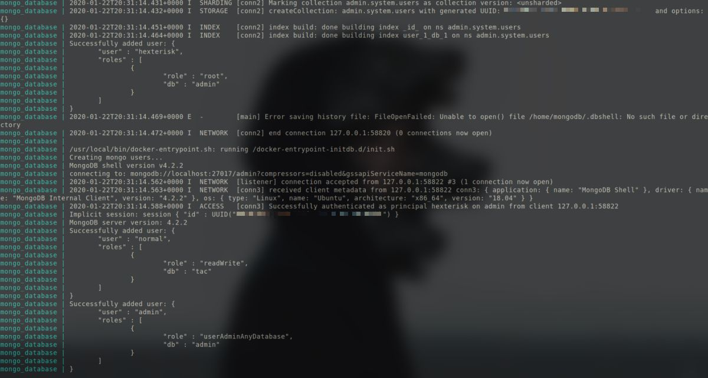 Executing the above command gives a lot of output. Similar output will be present at the part where new users are being setup.
Connecting to the Mongo container
MongoDB server can now be connected as long as the IP address is known for the container.
Container’s IP Address can be found out by:
docker inspect --format '{{ .NetworkSettings.IPAddress }}' CONTAINER_NAME/CONTAINER_ID
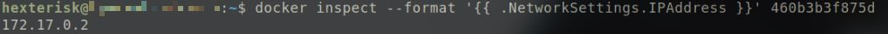 Output gives the container’s IPAddress.
If the output is empty, simply run:
docker inspect CONTAINER_NAME/CONTAINER___ID
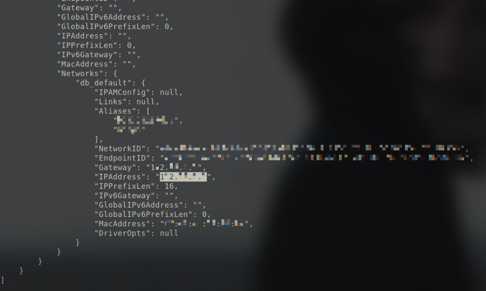 The last part of the command’s output.
and search for the IPAddress field in the output.
Then simply connect to the instance by passing the username, password, IPAddress and database as parameters:
mongo -u USERNAME -p PASSWORD IPAddress/DATABASE_NAME
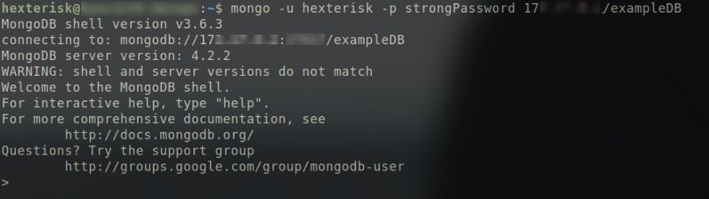 Connect to the container.